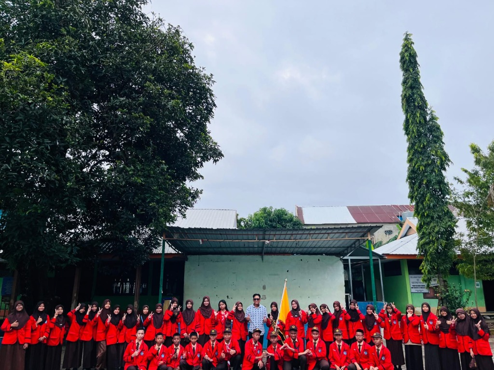
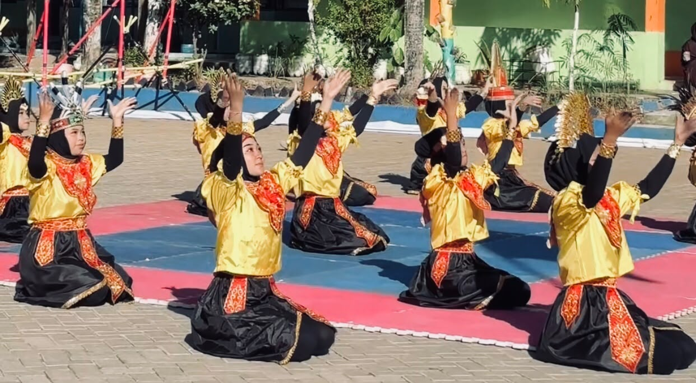
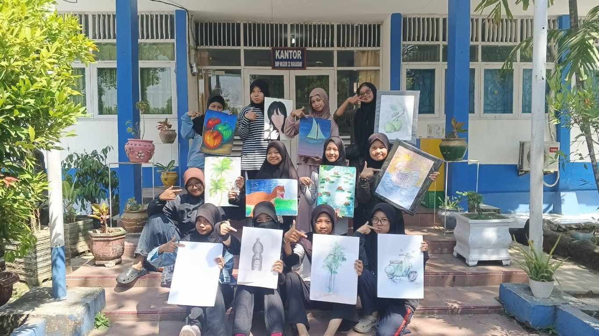
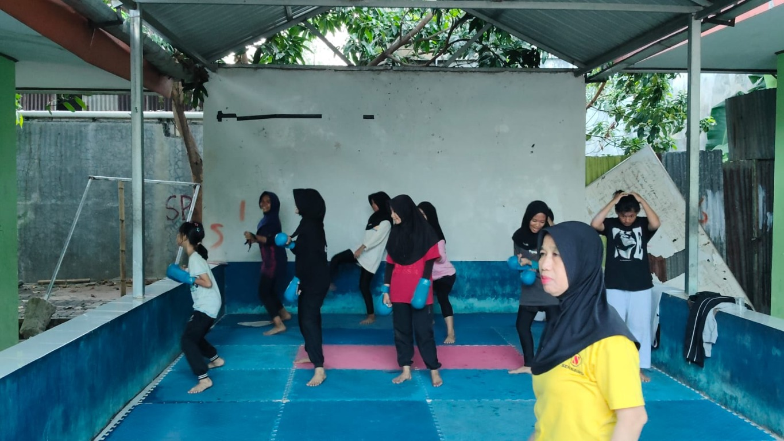
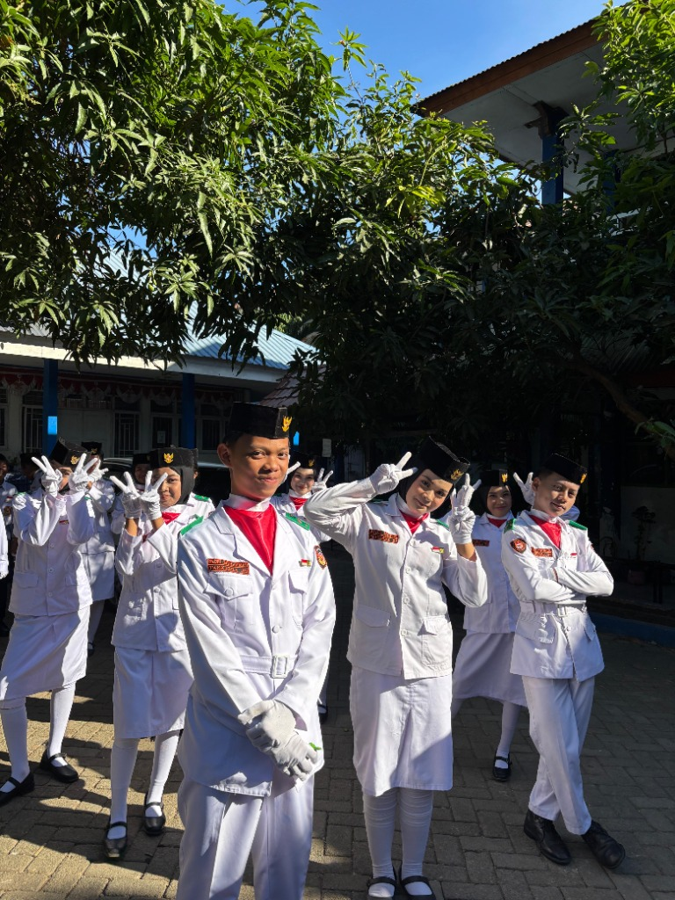
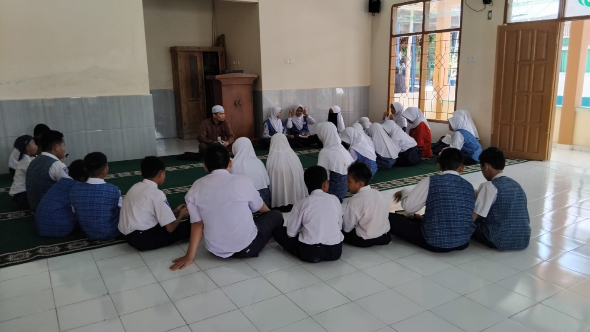
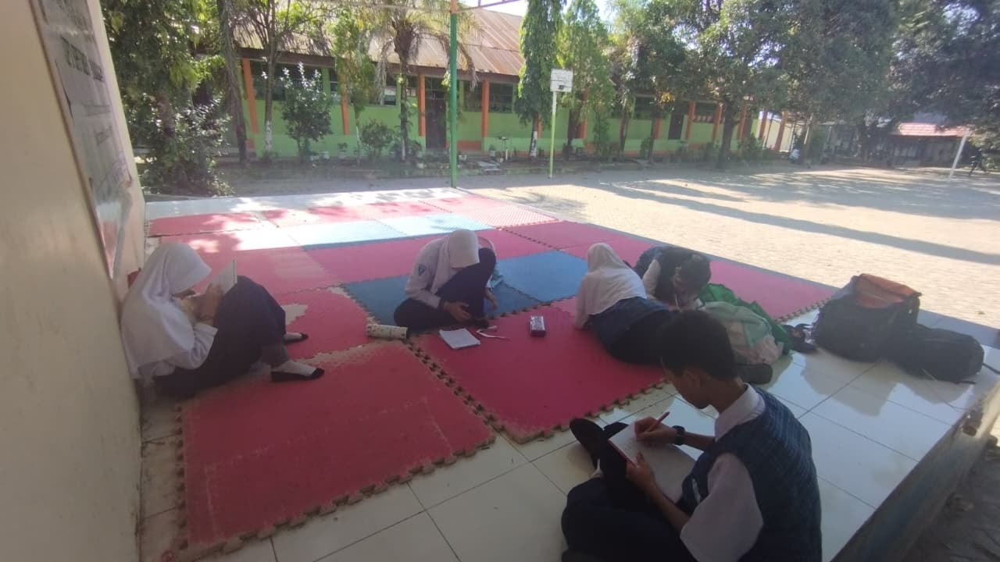

Kepala Sekolah
Drs. H. Anwar, M.Pd
Mapel: IPS
Mewujudkan generasi cerdas, berakhlak mulia, dan kreatif.
Siswa Aktif
Siswi
Siswa
Guru & Staf
Ekstrakurikuler
"Mewujudkan murid yang berakhlak mulia, beriman, berilmu, terampil, berprestasi, memiliki wawasan lingkungan dan berkarakter sesuai dengan profil pelajar pancasila."
UPTD SPF SMPN 32 Makassar · Jl. Dg. Ramang No. 90, Kel. Sudiang Raya, Kec. Biringkanaya, Makassar
Drs. H. Anwar, M.Pd
Mapel: IPS
| Bidang | Nama | Pangkat / Golongan | Keterangan |
|---|---|---|---|
| Wakasek Bidang Akademik/Pengajaran | Nur Hayaty, S.Pd | Pembina Utama Muda · IV/c | Koordinator |
| Wakasek Bidang Akademik/Pengajaran | Juliana, S.Si., M.M | Penata Tk. I · III/d | Anggota |
| Wakasek Bidang Sarana dan Prasarana | Yakop Riawan T, S.S | Pembina Utama Muda · IV/c | Koordinator |
| Wakasek Bidang Sarana dan Prasarana | Nur Irbadh Wahab, S.Ag | Penata Muda | Anggota |
| Wakasek Kesiswaan | Jamal, S.Pd., M.Pd | Pembina Tk. I | Koordinator |
| Wakil Kepala Sekolah | Yuslinda, S.Pd.I., M.Pd.I | — | Mapel: PAI |
Melatih kemandirian, kepemimpinan, dan kepedulian sosial siswa.
Pembina: Siti Sabetia, S.Pd

Belajar menjadi pemimpin, menjadi contoh bagai siswa, dan pendorong semangat dan keaktifan siswa untuk berkontribusi dalam berbagai kegiatan positif di sekolah.
Pembina: Yuli Hartani Kusnindar, S.Pd
Menumbuhkan sportivitas dan prestasi di tingkat kota hingga provinsi.
Pembina: Dra. Hj. Intang

Melestarikan budaya Sulawesi Selatan melalui seni tari.
Pembina: Hj. Muryani, S.Pd

Mengembangkan kreativitas dan imajinasi siswa melalui seni visual.
Pembina: Arman Ahmad Djaya, S.Pd

Meningkatkan kemampuan bernyanyi dan kerjasama dalam kelompok.
Pembina: Lydia Nita Dwikusumah, S.Pd

Mengembangkan keterampilan keperawatan dan respons darurat serta menjalankan program sosial untuk masyarakat.
Pembina: Sumiyati, S.Pd., M.Pd

Mengembangkan disiplin, kekuatan, dan teknik bela diri.
Pembina: St. Mardiah, S.Pd
Melatih kebugaran, kerja sama tim, dan sportivitas di lapangan.
Pembina: Andi P.M. Yusril, S.H

Mengembangkan kelincahan, fokus, dan semangat berkompetisi.
Pembina: Mila Karmila, S.Pd

Membimbing siswa menghafal dan mencintai Al-Qur'an.
Pembina: Yuslinda, S.Pd.I

Melatih kemampuan menulis, meliput berita, dan mengelola media sekolah.
Pembina: Aynun Mardhati, S.Pd., M.Hum
Sampaikan ucapan terima kasih kepada guru-guru hebat UPTD SPF SMPN 32 Makassar.
Kunjungi Web Hari GuruPunya pertanyaan seputar pendaftaran atau kegiatan sekolah? Silakan hubungi kami melalui informasi kontak berikut.
Alamat: Jl. Daeng ramang, No.90, Sudiang Raya Kota Makassar, Sulawesi Selatan
Email: osis.smpn32makassar@gmail.com
Sosial Media: @osismps.smpn32mks on instagram
Sosial Media: @smpn.32makassar on tiktok